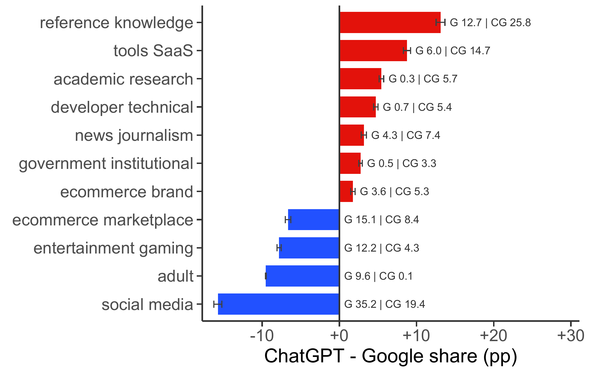

Welcome!
I am a PhD student in Marketing at Bocconi University. Before that, I received my Master's degree in Data Science at Bocconi University and Bachelor's degree in Economics at Zhejiang University.
I work in digital economics, artificial intelligence, and computational social science.
Research
Research Interests
I study how generative AI is reorganizing digital information markets. My research asks what happens when AI systems become intermediaries between users, platforms, and information producers. I examine how this shift reallocates attention and economic value, changes consumer choice, and feeds back into the supply of the open web.
My current research develops along two related streams. AI-mediated discovery and choice studies how generative AI changes information search, market intermediation, and consumer decision-making. Data access and knowledge production examines how AI transforms the incentives and institutions governing the supply of digital information, and its downstream implications for competition, information quality, and the diversity of online knowledge.
To study these questions, I combine economic insights with causal and computational methods, drawing on machine learning and natural language processing to analyze large-scale structured and unstructured data.
Working Papers

Search engines have long allocated attention on the web by routing users from queries to websites. AI search changes this arrangement because information needs can be resolved inside the intermediary. Using URL-level Comscore U.S. desktop clickstream, we compare ChatGPT and Google information-seeking occasions and exploit ChatGPT Search access expansions to estimate traditional search displacement. ChatGPT produces outbound clicks in only 5.2% of conversation sessions, far below Google’s referral ratio. The remaining clicks are not a scaled-down Google stream: they skew toward specialized destinations and away from ad-supported sites. Wider access cuts search use by 9.4%, with search-referral losses largest for informational categories. Our findings identify a central economic shift in digital intermediation: AI search might satisfy information needs inside the intermediary while weakening the referral bargain that has linked search, traffic, and content production on the open web.
Governing AI Content Tools: The Efficiency–Diversity Trade-off in Platform Knowledge Ecosystems